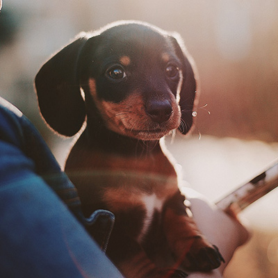
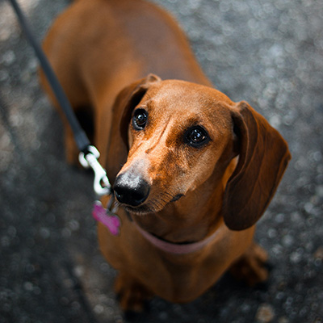

Meet Our Pups!
These are our adorable Dachshund dogs and puppies that need forever homes. For any questions about these pups or the adoption process don’t hesitate to contact us!
-
Hansel Age: 2yr.
Hansel is an adorable purebred Dachshund. He loves playing with other dogs and getting pets and loving from people. He is great with children and would suit any home.
-
Sally Age: 1yr.
Sally is a cute purebred Dachshund who was rescued from an abandoned home. She is a little shy, but loves a good cuddle. She would suit a quiter household with few pets.
-
Brownie Age: 5yrs.
Brownie is an older boy here at the rescue, he was saved from a hole near a park where he got stuck trying to chase a rabbit. His owners were not located and was later taken in by Zann's Wiener Rescue. He is a fun loving boy, a little bratty, but great with people. He like to bark so his forever home would be better outside of the city.
-
Brandy Age: 6mo.
Brandy is an adorable 6 month old pup, who was given to us by a family who moved overseas. She has a super sweet personality and love to play and cuddle. She would be well suited for any family.
-

Demi Age: 8 weeks
Demi is a very sweet little baby girl. She loves to play and run, and get lots of cuddles. She was rescued from a puppy mill and given to us when she was only 6 weeks old, now she is healthy and happy and ready for a forever home.
-
Robert Age: 11yr.
Robert is our oldest pup at the rescue. He is an absolute sweety and needs a good home for him to relax and go for short walks and get all the loving for the last few years he has left.
-
Valentine Age: 10mo.
Valentine is an adventous little cutie. He loves to run, play, and chase squirrels. He is very good with people but not so good with small animals. Better suited for a family with no other pets.
-

Penny Age: 1yr.
Penny is an adorable 1 year old pup, who was given to us by a vet clinic when their family abandoned her. She has a super sweet personality and love to play and cuddle. She would be well suited for any home.
-
Lucy Age: 6mo.
Lucy a sweet little 6 month old wiener. She has a super sweet girl with a unique dapple colour. She is loving and smart and would be well suited for any family.